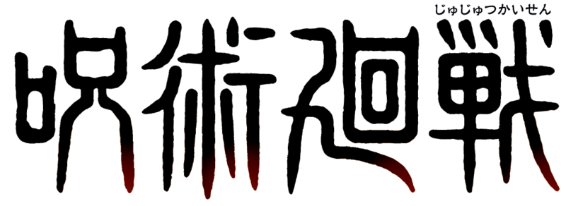
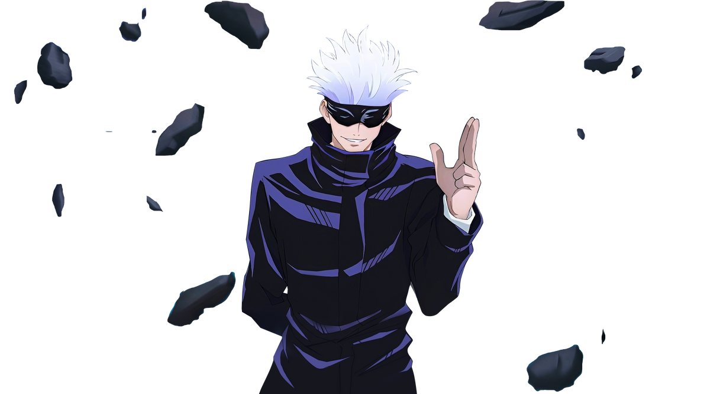

Em 31 de outubro, uma cortina de repente cai ao redor da Estação de Shibuya, uma área repleta de pessoas comemorando o Halloween, e um grande número de civis fica preso. Gojo se aventura sozinho em Shibuya, mas (a situação era na verdade) uma armadilha montada por Geto, Mahito e outros espíritos amaldiçoados. Yuji Itadori, Megumi Fushiguro, Nobara Kugisaki, e os estudantes e feiticeiros do Colégio Jujutsu se reúnem em Shibuya e uma batalha de grande escala está prestes a se desenrolar. Uma história espetacular que gira em torno de maldições se inicia mais uma vez.